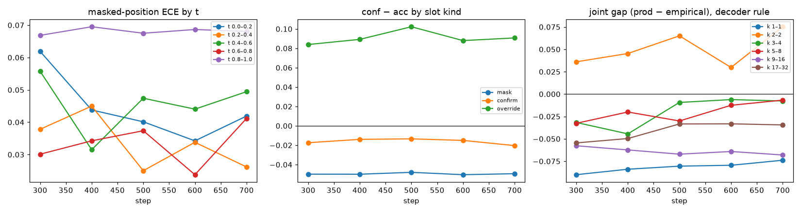
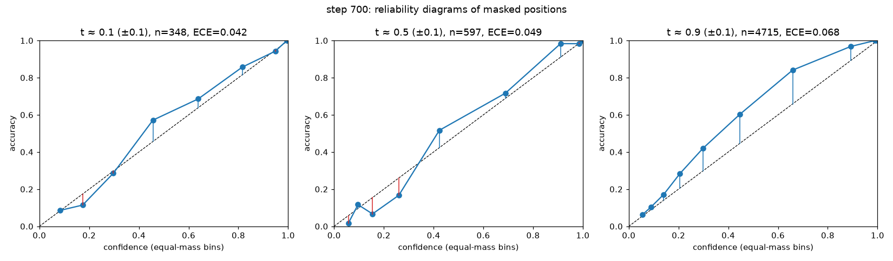
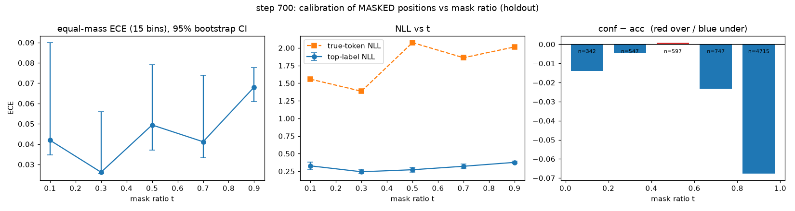
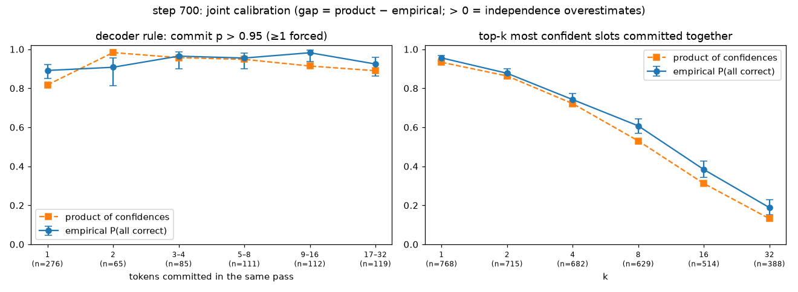
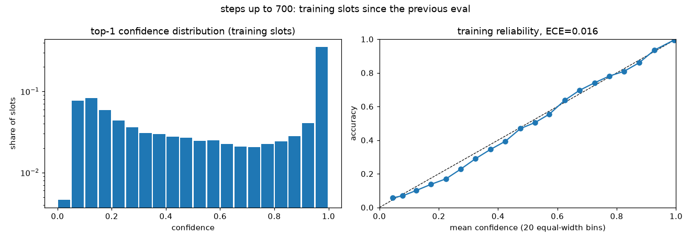

ICLR 2027 · draft-aligned decoding · round 3 · SDAR-30B-A3B-Chat-b32 + SDAR-1.7B drafter
Round 3 retrains the judge that decides when SDAR-30B-A3B should keep a small drafter’s tokens. Round 3a (r3_A) starts fresh from stock on a code-heavy mix to repair the 13–14 point code collapse of the round-2 judge; round 3b (r3_B) retrains one epoch from r3_A’s epoch-1 weights with a calibrated objective. Both parts regenerate from the training logs and the eval records on disk.
Round 3b
One more epoch from r3_A’s epoch-1 weights, with a weaker certainty term, a calibration loss on the commit confidence and extra weight on override slots. The r3_A material (idea, data, method, plateau diagnosis) follows further down; this part covers only what changed and what it did.
r3_A/step000700 (epoch-1 weights) with a fresh optimiser and schedule, 710 steps = one more epoch.
It was restarted once at step 300 (12:55 IST) only to add the calibration logging, and finished step 710 = epoch 2 at 14:31 IST
(done marker present; 8 checkpoint saves in the log). Last row 2026-09-15T09:01:10Z UTC.r3_B/step000710 + DES48 on all six sets are in the tables below (snapshot 2026-09-15 19:24 IST); the r3_A epoch-1/epoch-2 arms and stock are re-summarised on the same item universe.Where things are
r3_B/checkpoints, r3_A/checkpoints, round2_t2b_union_flag/step003057, reference_evals, r3_B/analysisround3-2026-09-14 · docs/results/r3_B/, docs/MODELS_AND_RESULTS_2026-09-15.mdtrain.rank0.jsonl)r3_A's holdout accuracy stopped moving after epoch 1 while its certainty term kept sharpening the distribution (the r3_A section below, “Why the curves flattened”, has the full diagnosis). Two things in the plateau probe made that a recipe problem rather than a data problem.
holdout_pass1|all|draft_bad), the slots r3_A committed at p > 0.95 were right only
77.5–81.2% of the time across steps 700, 1000, 1400, 1500 (code pool: 74.2–78.0%). A single wrong committed token breaks a program.draft_ok slots went 99.1% → 96.7% over the same checkpoints, while the confident fraction kept rising. The β=2 certainty term was buying confidence, not correctness.r3_A (original)
r3_B (calibrated)
The BCE term is a proper scoring rule on the exact scalar the decoder thresholds at inference, so a slot that is committed at 0.97 is trained to be right 97% of the time, in both directions.
The weights move the CE mass toward the decisions that break programs. Code: code/draftalign/losses.py; trainer flags
--beta 0.5 --calib 1 --override-weight 2 --code-override-weight 3 --init-adapter logs/draftalign/eval_ckpts/step000700
(385 tensors loaded; optimiser and cosine schedule restarted from step 0; config hash 14e6ea6e9933ad96).
x is epochs of the same 22,734-example split: r3_A step N is N·32/22,734, r3_B step N is 1 + N·32/22,734 because it starts from r3_A’s step-700 weights. These are the per-step series logged to W&B (r3_B, r3_A), read from each run’s train.rank0.jsonl.
The trainer’s 64-state holdout eval (draft_pass1), r3_B every 100 steps against r3_A every 200, on the epoch axis. Differences of about one point are noise.
The trainer probed calibration on 768 teacher-forced holdout states (16,908 open slots) at steps 300, 400, 500, 600, 700. Numbers below compare the first probe (step000300) with the latest (step000700); the PNGs are the trainer’s own plots for the latest step.
| quantity | step000300 first probe | step000700 latest | change (latest − first) |
|---|---|---|---|
| masked slots: ECE by denoising time t (higher t = more of the block still open) | |||
| t 0.0–0.2 n=342 | 0.062 [0.040, 0.099] | 0.042 [0.035, 0.090] | −0.014 |
| t 0.2–0.4 n=547 | 0.038 [0.025, 0.075] | 0.026 [0.025, 0.056] | −0.004 |
| t 0.4–0.6 n=597 | 0.056 [0.039, 0.083] | 0.049 [0.037, 0.079] | +0.001 |
| t 0.6–0.8 n=747 | 0.030 [0.027, 0.061] | 0.041 [0.033, 0.074] | −0.023 |
| t 0.8–1.0 n=4,715 | 0.067 [0.059, 0.076] | 0.068 [0.061, 0.078] | −0.068 |
| conf − acc by slot kind (positive = overconfident) | |||
| mask: slot was [MASK] n=6,948 · acc 56.9% | −0.050 ECE 0.051 | −0.049 ECE 0.051 | +0.000 |
| confirm: draft present and right n=4,843 · acc 90.5% | −0.017 ECE 0.018 | −0.020 ECE 0.021 | −0.003 |
| override: draft present and wrong n=5,117 · acc 33.0% | +0.084 ECE 0.084 | +0.091 ECE 0.091 | +0.007 |
| joint calibration under the decoder rule (commit p > 0.95): product of confidences − empirical P(all correct), by tokens committed in one pass | |||
| k 1 n=276 states · empirical 0.891 [0.849, 0.923] | −0.090 | −0.074 | +0.016 |
| k 2 n=65 states · empirical 0.908 [0.813, 0.957] | +0.036 | +0.075 | +0.039 |
| k 3–4 n=85 states · empirical 0.965 [0.901, 0.988] | −0.032 | −0.008 | +0.024 |
| k 5–8 n=111 states · empirical 0.955 [0.899, 0.981] | −0.033 | −0.007 | +0.026 |
| k 9–16 n=112 states · empirical 0.982 [0.937, 0.995] | −0.058 | −0.068 | −0.010 |
| k 17–32 n=119 states · empirical 0.924 [0.862, 0.960] | −0.055 | −0.034 | +0.020 |
Caveat: the joint calibration is a single-forward simulation on teacher-forced holdout states; “correct” means equal to the stock training-trajectory token at that slot, not to ground truth, and the decoder rule is applied once per state rather than iterated to the end of the block.





Snapshot generated 2026-09-15 19:24 IST from logs/draftalign/probes_r3/r3_B/step000710: 48 complete, 4 partial and 8 pending cells over 10 arms × 6 datasets. Every Δ is paired on the items both arms scored; brackets are bootstrap 95% CIs; speedup is stock expert loads per token ÷ the arm’s, on the shared items (the drafter is not charged).
Cell = items scored / items in the set. Partial cells are r3_A’s 100-item GSM8K and 50-item MATH subsets, and the team mirror’s incomplete stock + DES48 on GPQA and AIME; their Δs are on that subset only.
| arm | HumanEvaln=164 | MBPP (sanitized)n=257 | GSM8K-500n=500 | MATH-500n=500 | GPQA-Diamondn=198 | AIMEn=90 |
|---|---|---|---|---|---|---|
| stock | 164/164 | 257/257 | 500/500 | 500/500 | 198/198 | 90/90 |
| stock + DES48 | 164/164 | 257/257 | 500/500 | 500/500 | 198/198 | 90/90 |
| r3_B epoch 2 judge + DES48 | 164/164 | 257/257 | 500/500 | 500/500 | 198/198 | 90/90 |
| round-2 judge + DES48 (T2b 3057) | 164/164 | 257/257 | 500/500 | 500/500 | 198/198 | 90/90 |
| r3_A epoch 1 judge + DES48 | 164/164 | 257/257 | 100/500partial | 50/500partial | 0/198pending | 0/90pending |
| r3_A epoch 2 judge + DES48 | 164/164 | 257/257 | 100/500partial | 50/500partial | 0/198pending | 0/90pending |
| r3_A last ckpt (step 2000, 2.82 ep) judge + DES48 | 164/164 | 257/257 | 0/500pending | 0/500pending | 0/198pending | 0/90pending |
| secondary arms | ||||||
| stock + DES32 | 164/164 | 257/257 | 500/500 | 500/500 | 198/198 | 90/90 |
| blind accept (no training) | 164/164 | 257/257 | 500/500 | 500/500 | 198/198 | 90/90 |
| r3_B epoch 2 judge | 164/164 | 257/257 | 500/500 | 500/500 | 198/198 | 90/90 |
One point per arm and dataset: Δacc vs stock (whisker = 95% CI) against the speedup in expert loads per token vs stock. Up and right is better; the zero line is “as accurate as stock”. Hollow = partial cell.
| arm | acc % | Δ vs stock [95% CI] | Δ vs stock + DES48 [CI] | speedup (exp/token) | passes/blk | n scored |
|---|---|---|---|---|---|---|
| HumanEval · 164 items | ||||||
| stock | 78.0 | reference | — | 1.00× | 8.26 | 164 |
| stock + DES48 | 78.7 | +0.6 [−2.4, +4.3]n=164 | reference | 1.19×n=164 | 8.05 | 164of 164 |
| r3_B epoch 2 judge + DES48 | 75.0 | −3.0 [−8.5, +1.8]n=164 | −3.7 [−9.1, +1.2]n=164 | 1.50×n=164 | 5.94 | 164of 164 |
| round-2 judge + DES48 (T2b 3057) | 62.2 | ▼ −15.9 [−22.6, −9.1]n=164 | ▼ −16.5 [−23.2, −10.4]n=164 | 1.84×n=164 | 5.15 | 164of 164 |
| r3_A epoch 1 judge + DES48 | 67.1 | ▼ −11.0 [−17.7, −4.3]n=164 | ▼ −11.6 [−18.3, −5.5]n=164 | 1.39×n=164 | 6.37 | 164of 164 |
| r3_A epoch 2 judge + DES48 | 69.5 | ▼ −8.5 [−15.9, −1.8]n=164 | ▼ −9.1 [−15.9, −3.0]n=164 | 1.49×n=164 | 5.71 | 164of 164 |
| r3_A last ckpt (step 2000, 2.82 ep) judge + DES48 | 70.1 | ▼ −7.9 [−14.6, −1.2]n=164 | ▼ −8.5 [−15.2, −2.4]n=164 | 1.60×n=164 | 5.38 | 164of 164 |
| MBPP (sanitized) · 257 items | ||||||
| stock | 65.4 | reference | — | 1.00× | 11.93 | 257 |
| stock + DES48 | 63.8 | −1.6 [−5.8, +3.1]n=257 | reference | 1.16×n=257 | 12.09 | 257of 257 |
| r3_B epoch 2 judge + DES48 | 61.1 | −4.3 [−10.1, +1.9]n=257 | −2.7 [−8.6, +2.7]n=257 | 1.38×n=257 | 9.71 | 257of 257 |
| round-2 judge + DES48 (T2b 3057) | 53.7 | ▼ −11.7 [−18.3, −5.1]n=257 | ▼ −10.1 [−16.3, −4.3]n=257 | 1.25×n=257 | 10.77 | 257of 257 |
| r3_A epoch 1 judge + DES48 | 56.8 | ▼ −8.6 [−15.2, −2.3]n=257 | ▼ −7.0 [−13.6, −1.2]n=257 | 1.35×n=257 | 9.84 | 257of 257 |
| r3_A epoch 2 judge + DES48 | 61.9 | −3.5 [−9.7, +3.1]n=257 | −1.9 [−8.2, +4.3]n=257 | 1.49×n=257 | 8.78 | 257of 257 |
| r3_A last ckpt (step 2000, 2.82 ep) judge + DES48 | 55.6 | ▼ −9.7 [−16.0, −3.5]n=257 | ▼ −8.2 [−14.4, −1.9]n=257 | 1.58×n=257 | 8.30 | 257of 257 |
| GSM8K-500 · 500 items | ||||||
| stock | 90.2 | reference | — | 1.00× | 10.06 | 500 |
| stock + DES48 | 91.2 | +1.0 [−0.8, +2.8]n=500 | reference | 1.26×n=500 | 9.96 | 500of 500 |
| r3_B epoch 2 judge + DES48 | 90.8 | +0.6 [−1.8, +3.0]n=500 | −0.4 [−2.4, +1.6]n=500 | 1.54×n=500 | 7.83 | 500of 500 |
| round-2 judge + DES48 (T2b 3057) | 87.8 | −2.4 [−4.8, +0.0]n=500 | ▼ −3.4 [−6.0, −1.0]n=500 | 1.74×n=500 | 6.76 | 500of 500 |
| partial 100/500 r3_A epoch 1 judge + DES48 | 90.0 | −2.0 [−8.0, +3.0]n=100 | −2.0 [−8.0, +3.0]n=100 | 1.57×n=100 | 7.76 | 100of 500 |
| partial 100/500 r3_A epoch 2 judge + DES48 | 90.0 | −2.0 [−8.0, +3.0]n=100 | −2.0 [−7.0, +2.0]n=100 | 1.74×n=100 | 6.89 | 100of 500 |
| MATH-500 · 500 items | ||||||
| stock | 72.4 | reference | — | 1.00× | 8.52 | 500 |
| stock + DES48 | 70.6 | −1.8 [−4.8, +1.4]n=500 | reference | 1.22×n=500 | 8.58 | 500of 500 |
| r3_B epoch 2 judge + DES48 | 69.2 | −3.2 [−6.6, +0.2]n=500 | −1.4 [−4.8, +2.0]n=500 | 1.38×n=500 | 7.37 | 500of 500 |
| round-2 judge + DES48 (T2b 3057) | 69.2 | −3.2 [−6.8, +0.2]n=500 | −1.4 [−4.6, +2.0]n=500 | 1.55×n=500 | 6.39 | 500of 500 |
| partial 50/500 r3_A epoch 1 judge + DES48 | 72.0 | −4.0 [−16.0, +8.0]n=50 | +4.0 [−6.0, +16.0]n=50 | 1.35×n=50 | 7.47 | 50of 500 |
| partial 50/500 r3_A epoch 2 judge + DES48 | 68.0 | ▼ −8.0 [−16.0, −2.0]n=50 | +0.0 [−10.0, +10.0]n=50 | 1.55×n=50 | 6.37 | 50of 500 |
| GPQA-Diamond · 198 items | ||||||
| stock | 37.4 | reference | — | 1.00× | 16.07 | 198 |
| stock + DES48 | 35.9 | −1.5 [−9.1, +6.1]n=198 | reference | 1.10×n=198 | 16.72 | 198of 198 |
| r3_B epoch 2 judge + DES48 | 28.8 | ▼ −8.6 [−15.7, −1.5]n=198 | ▼ −7.1 [−13.6, −0.5]n=198 | 1.24×n=198 | 14.45 | 198of 198 |
| round-2 judge + DES48 (T2b 3057) | 27.8 | ▼ −9.6 [−17.2, −2.5]n=198 | ▼ −8.1 [−15.7, −1.0]n=198 | 1.23×n=198 | 14.60 | 198of 198 |
| r3_A epoch 1 judge + DES48 | pending | |||||
| r3_A epoch 2 judge + DES48 | pending | |||||
| AIME · 90 items | ||||||
| stock | 6.7 | reference | — | 1.00× | 10.77 | 90 |
| stock + DES48 | 6.7 | +0.0 [−3.3, +3.3]n=90 | reference | 1.19×n=90 | 10.79 | 90of 90 |
| r3_B epoch 2 judge + DES48 | 7.8 | +1.1 [−2.2, +5.6]n=90 | +1.1 [−2.2, +5.6]n=90 | 1.38×n=90 | 9.12 | 90of 90 |
| round-2 judge + DES48 (T2b 3057) | 8.9 | +2.2 [−2.2, +6.7]n=90 | +2.2 [−2.2, +6.7]n=90 | 1.48×n=90 | 8.35 | 90of 90 |
| r3_A epoch 1 judge + DES48 | pending | |||||
| r3_A epoch 2 judge + DES48 | pending | |||||
Tables as markdown: logs/draftalign/probes_r3/r3_B/eval_summary.md. Records: logs/draftalign/probes_r3/r3_B/step000710/<ds>/<arm>/.
Round 3a
Everything below is the r3_A report as it stood: the idea, the data split, the method, the curves, the plateau diagnosis that motivated r3_B, and r3_A’s own eval wave.
step001500 at 09:53 IST with the same recipe, and was stopped for good at step 2,000 (2.82 epochs) at 11:44 IST; last logged row step 2,000 at 11:41 IST. No further training on this recipe: the calibrated retrain r3_B (Round 3b above) starts from its step-700 weights.step000700 (epoch 1): 12 of 12 cells, judge / DES32 / DES48 on HumanEval (164), MBPP (257), GSM8K-500 (first 100) (100), MATH-500 (first 50) (50).step001400 (epoch 2): 12 of 12 cells, judge / DES32 / DES48 on HumanEval (164), MBPP (257), GSM8K-500 (first 100) (100), MATH-500 (first 50) (50).step001500, dropped at 09:40 IST so training could resume at 09:53 IST (user decision). Only HumanEval judge 164/164; HumanEval judge + DES32 82/164 ran; those numbers are kept as a reference row.step002000 (step 2,000): 2 of 12 cells, judge / DES32 / DES48 on HumanEval (164), MBPP (257), GSM8K-500 (first 100) (100), MATH-500 (first 50) (50). Not yet complete: HumanEval judge: pending; HumanEval judge + DES32: pending; MBPP judge: pending; MBPP judge + DES32: pending; GSM8K-500 (first 100) judge: pending; GSM8K-500 (first 100) judge + DES32: pending; GSM8K-500 (first 100) judge + DES48: pending; MATH-500 (first 50) judge: pending; MATH-500 (first 50) judge + DES32: pending; MATH-500 (first 50) judge + DES48: pending.Headline: code accuracy, epoch 1 → epoch 2, with Δ vs stock (paired, 95% CI), expert loads per token and passes per block. Step 1,500 is a partial extra.
| arm | epoch 1 · step 700 | epoch 2 · step 1,400 | step 1,500 · dropped, partial |
|---|---|---|---|
| HumanEval · 164 items | |||
| stock | 78.0% reference982 exp/token · 8.26 passes/blk · n=164 | ||
| stock + DES48 | 78.7% +0.6 vs stock [−2.4, +4.3]823 exp/token · 8.05 passes/blk · n=164 | ||
| judge | 68.9% −9.1 vs stock [−15.2, −3.7]830 exp/token · 6.20 passes/blk · n=164 | 69.5% −8.5 vs stock [−14.6, −2.4]793 exp/token · 5.76 passes/blk · n=164 | 70.7% −7.3 vs stock [−14.0, −0.6]788 exp/token · 5.73 passes/blk · n=164 |
| judge + DES48 | 67.1% −11.0 vs stock [−17.7, −4.3]707 exp/token · 6.37 passes/blk · n=164 | 69.5% −8.5 vs stock [−15.9, −1.8]659 exp/token · 5.71 passes/blk · n=164 | dropped |
| MBPP · 257 items | |||
| stock | 65.4% reference1,714 exp/token · 11.93 passes/blk · n=257 | ||
| stock + DES48 | 63.8% −1.6 vs stock [−5.8, +3.1]1,482 exp/token · 12.09 passes/blk · n=257 | ||
| judge | 54.1% −11.3 vs stock [−17.5, −5.1]1,533 exp/token · 9.76 passes/blk · n=257 | 57.6% −7.8 vs stock [−14.4, −1.6]1,403 exp/token · 8.86 passes/blk · n=257 | dropped |
| judge + DES48 | 56.8% −8.6 vs stock [−15.2, −2.3]1,266 exp/token · 9.84 passes/blk · n=257 | 61.9% −3.5 vs stock [−9.7, +3.1]1,150 exp/token · 8.78 passes/blk · n=257 | dropped |
Epoch 2 (step 1,400): Δacc vs stock, paired · speedup in expert loads per token
SDAR-30B-A3B writes a block of 32 slots at a time. Each pass it commits only the slots whose top token clears 0.95, so a block takes 8–12 full MoE forwards
(stock: 8.26 passes/blk on HumanEval, 11.93 on MBPP, 10.06 on GSM8K-500; RESULTS.md §1). The work is repeated passes over mostly-right guesses.
A 1.7B drafter with the same tokenizer can fill the whole block in 8 cheap steps. The big model should then only have to judge each drafted token: keep it,
or replace it. The stock model cannot do that. At a filled slot it echoes the next token (93.6% of slots), because SDAR is trained only on [MASK] slots. The in-distribution
workaround is sycophantic: it confirms 76% of the drafter’s wrong tokens at > 0.95 and decodes at 67.0% against 95.0% (docs/EXPLAINER_DRAFT_ALIGNED_TRAINING.md §3).
Judging a draft is a skill the frozen model lacks. No threshold or vote can add it; training has to.
The judge. A LoRA on the attention projections, plus a learned 2,048-dim draft flag added to the input embedding of every tentative draft slot.
The LoRA delta applies only at flagged slots, and the router gates stay frozen. A forward with no flagged slot is therefore bit-identical to the stock model, and the step-0 identity check in
train.log confirms it: {'states_checked': 8, 'flagged_slots': 0, 'lora_identity_at_zero_flag': True, 'draft_embed_zero': True}. At inference (--judge full --draft s8) the judge reads the draft-filled block and commits
the slots it is confident about. DES32/DES48 further restrict each forward to a 32- or 48-expert pool voted from the block, which cuts expert loads.
The published round-2 judge (T2b step 3057) was fast, but its accuracy collapsed on program source.
| eval set | share of T2b training | Δacc (judge) |
|---|---|---|
| GSM8K-500 | 62.7% | −1.4 |
| MATH-500 | 37.0% | −4.4 |
| MBPP | 0.2% | −14.0 |
| HumanEval | never seen | −13.4 |
| GPQA-Diamond | never seen | −4.5 |
| AIME | never seen | −1.1 |
Training share does not predict the damage; being code does (docs/TRAINING_RECIPE_2026-09-09.md §1.3). The adapter is not learning Python.
It is learning a decision rule, when to trust the drafter, and that rule needs negatives where deferring is catastrophic (code), positives where it is safe
(maths, instruction following), and enough epochs on a small set (§1.2: T2a at 2.07 epochs beat T2b at 1.09 epochs over 3.9× the data at c90_o99).
23,558 training blocks (32-token blocks of correct decodes) from 4,444 items. The decodes were made by the training-free blind rule
(--draft s8 --judge blind --tau-acc-q .50, stock 30B + stock 1.7B), and only items whose output was verified correct are kept.
| pool | source | blocks | share | items | cap | a decode is admitted when |
|---|---|---|---|---|---|---|
| code | nvidia/OpenCodeInstruct | 8,297 | 35.2% | 2,344 | 8,400 | program passes the row’s unit tests (74% of decodes) |
| maths | openai/gsm8k train | 8,400 | 35.7% | 1,410 | 8,400 | final answer correct (94%) |
| verifiable IF | if_pool (see below) | 6,861 | 29.1% | 690 | 7,200 | strict pass on every constraint (35.5% of decodes) |
| total | 23,558 | 100% | 4,444 | 24,000 | index sha256 1c2ce419… | |
The trainer holds out whole items, not blocks: 150 items → 824 examples for the holdout, 22,734 examples for training
(train.log: {'items': 4444, 'examples': 23558, 'draft_examples': 23558} -> train 22734 / eval 824 examples). At 32 states per step, one epoch is 710.4 steps.
code/configs/if_pool.json, 6,000 items): 5,015 from nvidia/Nemotron-RL-instruction_following (WildChat prompts, IFEvalG ids), 731 from
allenai/IF_multi_constraints_upto5 and 254 from allenai/RLVR-IFeval. Each has 1–3 constraints, checked strictly by the vendored open-instruct IFEvalG checker @172e379. The Nemotron-RL top-up
was added after the user approved “allenai verifiable IF”, and it contains some edgy WildChat prompts (a content audit was requested).| base | JetLM/SDAR-30B-A3B-Chat-b32 @ c351bbc3 (128 experts × 48 layers, 8 active), block 32 |
|---|---|
| drafter | JetLM/SDAR-1.7B-Chat-b32, stock, frozen |
| adapter | LoRA r 32 / α 64 / dropout 0.0 on q, k, v, o × 48 layers + draft flag; gates frozen (train_gates=False); trainable {'lora': 26738688, 'gate': 0, 'draft_embed': 2048, 'total': 26740736} |
| optimiser | AdamW, lr 2e-05, weight decay 0.0, warmup 50, cosine to 0.5× (1e-05), grad clip 1.0 |
| batch | 8 GPUs × grad-accum 4 = 32 states/step, one full bf16 model per rank, manual all-reduce |
| schedule | 2,175 steps planned (3.06 epochs); stopped at 1,560 (2.20 epochs); checkpoint every 100, holdout eval every 200 on 64 states |
| states | p_pass1 0.4, p_draftfull 0.3, p_allmask 0.0; max seq 1200; expert pool during training 128 (none) |
| wall clock | launched 15 Sep 02:38 IST; median 12.7 s/step; last logged step 1,560 at 08:14 IST; stopped (SIGTERM) 08:16 IST; resumed from step 1,500 at 09:53 IST, latest step 2,000 |
| config hash | 3b7ca2dc900a1b53 · logs/draftalign/train/r3_A/config.json · launcher code/draftalign/launch_r3_train.sh |
An example is one (item, block) pair. Its state is re-drawn every time the example is visited (code/draftalign/dataset.py):
Targets T are the final tokens of the stock pipeline’s own correct decodes, not ground-truth text. The judge learns to reproduce what stock would have written, in fewer passes. The certainty term (dParallel) pushes already-right slots past the 0.95 commit threshold.
W&B run arushsharma536-spe-iit/sdar-draftalign/r3_A, pulled 15 Sep 11:26 IST
(source: wandb; run state as read: running, it read crashed between the 08:16 IST SIGTERM and the 09:53 IST resume, which logs into the same run). W&B train/loss matches train.rank0.jsonl at 150 logged steps (max |Δ| 0.00e+00). Steps 1,510–2,000 come from train.rank0.jsonl: the resumed run from step 1,500 (duplicate steps keep the resumed row), plus anything W&B lost at SIGTERM.
Every 200 steps the trainer scores 64 holdout states in two regimes at a 0.95 threshold. With 64 states, differences of about one point are noise.
draft_pass1: the judge on a pass-1 block filled by the drafter. This is the quantity training moves.allmask_pass1: the same model on an all-[MASK] block. No slot is flagged, so the adapter is inert and this line is the stock model, bit for bit. It is flat by design, a baseline and not a failure to learn.draft_pass1)allmask_pass1), flat by constructionAccuracy climbed through epoch 1 and then stopped: +0.06 ± 0.16 pts per 100 steps from step 700 to the stop. The loss did not get worse and the model did not memorise; it kept becoming more confident without becoming more correct. Below: the trend statistics, a per-slot-kind probe of seven checkpoints, five candidate mechanisms with their evidence, and a ranked list of what to try.
Train rows are logged every 10 steps, and each carries its own n_correct and n_rows. Accuracy below is pooled
(Σ n_correct ÷ Σ n_rows). The logged acc field is a mean of per-rank ratios and reads up to 11 pts higher on single rows. top1 in the log is the
mean top-1 probability, a confidence and not an accuracy, so top-1 minus accuracy measures overconfidence. Slopes are weighted least squares on
the 10-step rows, weighted by n_rows (unweighted for grad norm). They are reported in units per 100 steps with ± 1.96 SE, which treats the rows as independent. The pre-stop phases use the original run only.
The resumed run is fitted separately.
| train-log metric | 200–700 | 700–1,100 | 1,100–1,560 | 700–1,560 overall | resumed 1,510–2,000 |
|---|---|---|---|---|---|
| Accuracy on open slots (pooled)pts per 100 steps | +1.11 ± 0.44rising · mean 56.08 · n=51 | −0.19 ± 0.52flat: CI spans 0 · mean 59.00 · n=41 | −0.11 ± 0.36flat: CI spans 0 · mean 59.54 · n=47 | +0.06 ± 0.16flat: CI spans 0 · mean 59.30 · n=87 | +0.08 ± 0.49flat: CI spans 0 · mean 60.24 · n=50 |
| Overconfidence gap: mean top-1 probability − accuracypts per 100 steps | +0.97 ± 0.32rising · mean 10.66 · n=51 | +0.27 ± 0.36flat: CI spans 0 · mean 12.47 · n=41 | +0.14 ± 0.28flat: CI spans 0 · mean 12.90 · n=47 | +0.13 ± 0.11rising · mean 12.69 · n=87 | +0.17 ± 0.32flat: CI spans 0 · mean 13.35 · n=50 |
| Cross-entropynats per 100 steps | −0.040 ± 0.022falling · mean 1.639 · n=51 | +0.012 ± 0.023flat: CI spans 0 · mean 1.526 · n=41 | +0.000 ± 0.020flat: CI spans 0 · mean 1.530 · n=47 | +0.002 ± 0.008flat: CI spans 0 · mean 1.528 · n=87 | −0.003 ± 0.024flat: CI spans 0 · mean 1.493 · n=50 |
| Certainty term (entropy on right slots)per 100 steps | −0.0344 ± 0.0064falling · mean 0.3437 · n=51 | −0.0016 ± 0.0053flat: CI spans 0 · mean 0.2606 · n=41 | −0.0026 ± 0.0040flat: CI spans 0 · mean 0.2373 · n=47 | −0.0046 ± 0.0017falling · mean 0.2482 · n=87 | −0.0054 ± 0.0031falling · mean 0.2191 · n=50 |
| Gradient norm, pre-clipper 100 steps | +0.176 ± 0.101rising · mean 4.348 · n=51 | +0.123 ± 0.087rising · mean 4.449 · n=41 | +0.029 ± 0.073flat: CI spans 0 · mean 4.787 · n=47 | +0.076 ± 0.029rising · mean 4.627 · n=87 | −0.076 ± 0.071falling · mean 4.752 · n=50 |
Reading. Accuracy rose +1.11 ± 0.44 pts per 100 steps over steps 200–700. From step 700 to the stop the slope is +0.06 ± 0.16, flat, with a 95% interval that rules out even half a point of gain per 100 steps. Over the same stretch CE is flat (+0.002 ± 0.008), while the certainty term keeps falling (−0.0046 ± 0.0017) and the overconfidence gap keeps widening (+0.13 ± 0.11): 11.9 pts in steps 700–800 to 13.8 pts in steps 1,900–2,000. In short, after epoch 1 the model stopped getting more slots right, but kept getting more confident about the slots it was already predicting.
About the grad norm. The pre-clip norm drifts up from about 4.4 to about 5 while the clip is 1.0. Every logged step after step 100 is clipped (100%). Clipping multiplies the gradient by 1/‖g‖. AdamW then divides by the running root-mean-square of past gradients, so a roughly constant rescale largely cancels: it does not shrink the effective step the way a lower learning rate would. What it does do is re-weight steps, with large-gradient batches counting relatively less. A rising pre-clip norm next to a flat loss is consistent with the optimiser moving along a noisy, flat valley rather than descending. It is not evidence that the steps were too small.
| steps | rows | acc % | mean top-1 prob % | gap pts | CE | certainty | grad norm | steps clipped | lr ×10⁻⁵ (end) |
|---|---|---|---|---|---|---|---|---|---|
| 0–100 | 10 | 27.5 | 77.6 | 50.1 | 12.140 | 0.161 | 13.12 | — | 2.00 |
| 100–200 | 10 | 42.0 | 54.7 | 12.7 | 2.759 | 0.520 | 5.08 | 100% | 1.99 |
| 200–300 | 10 | 52.8 | 61.7 | 8.9 | 1.740 | 0.425 | 3.86 | 100% | 1.97 |
| 300–400 | 10 | 56.2 | 66.3 | 10.0 | 1.622 | 0.354 | 4.22 | 100% | 1.93 |
| 400–500 | 10 | 56.9 | 67.9 | 10.9 | 1.602 | 0.325 | 4.47 | 100% | 1.89 |
| 500–600 | 10 | 57.1 | 69.1 | 12.0 | 1.623 | 0.301 | 4.92 | 100% | 1.84 |
| 600–700 | 10 | 57.6 | 69.7 | 12.1 | 1.581 | 0.296 | 4.37 | 100% | 1.79 |
| 700–800 | 10 | 59.8 | 71.7 | 11.9 | 1.512 | 0.259 | 4.38 | 100% | 1.72 |
| 800–900 | 10 | 58.4 | 70.8 | 12.4 | 1.530 | 0.268 | 4.34 | 100% | 1.66 |
| 900–1,000 | 10 | 59.2 | 71.7 | 12.6 | 1.494 | 0.263 | 4.47 | 100% | 1.58 |
| 1,000–1,100 | 10 | 58.8 | 71.6 | 12.8 | 1.567 | 0.253 | 4.68 | 100% | 1.51 |
| 1,100–1,200 | 10 | 59.7 | 72.4 | 12.7 | 1.525 | 0.241 | 4.72 | 100% | 1.44 |
| 1,200–1,300 | 10 | 60.6 | 72.9 | 12.3 | 1.506 | 0.241 | 4.80 | 100% | 1.36 |
| 1,300–1,400 | 10 | 58.6 | 71.8 | 13.2 | 1.576 | 0.239 | 4.75 | 100% | 1.29 |
| 1,400–1,500 | 10 | 59.3 | 72.6 | 13.3 | 1.527 | 0.227 | 4.76 | 100% | 1.23 |
| 1,500–1,600 resumed | 10 | 59.7 | 72.5 | 12.9 | 1.541 | 0.234 | 5.02 | 100% | 1.17 |
| 1,600–1,700 resumed | 10 | 60.2 | 73.8 | 13.6 | 1.456 | 0.218 | 4.69 | 100% | 1.12 |
| 1,700–1,800 resumed | 10 | 61.6 | 74.7 | 13.0 | 1.428 | 0.214 | 4.75 | 100% | 1.08 |
| 1,800–1,900 resumed | 10 | 59.5 | 72.9 | 13.5 | 1.561 | 0.221 | 4.62 | 100% | 1.04 |
| 1,900–2,000 resumed | 10 | 60.3 | 74.1 | 13.8 | 1.474 | 0.208 | 4.68 | 100% | 1.02 |
The plateau probe scores the same deterministic pass-1 states (all open slots hold the draft, the inference state) on 160 training-split examples and on 160 holdout examples, for every checkpoint. If the model were memorising, train accuracy would keep rising while the holdout stays flat. If both are flat, the objective has stopped yielding signal.
| checkpoint | train acc % | holdout acc % | train − holdout | slots (train / holdout) |
|---|---|---|---|---|
| stock | 11.1 | 12.8 | −1.7 | 4656 / 4617 |
| step000200 | 46.4 | 45.4 | +1.0 | 4656 / 4617 |
| step000400 | 49.0 | 54.9 | −5.8 | 4656 / 4617 |
| step000700 | 52.8 | 56.8 | −4.1 | 4656 / 4617 |
| step001000 | 53.2 | 56.5 | −3.3 | 4656 / 4617 |
| step001400 | 54.4 | 57.5 | −3.1 | 4656 / 4617 |
| step001500 | 54.2 | 56.8 | −2.6 | 4656 / 4617 |
At step001500, train-split accuracy is 54.2% against 56.8% on the holdout, a gap of −2.6 pts. Both sit close together, so the adapter is not memorising its 22.7k training examples: this is a plateau, not overfitting. Train-split accuracy moved +1.4 pts from step 700.
Each open slot is classed by what the judge should do. Confirm: the draft token equals the target. Override: the draft is wrong and the judge must replace it. Masked: no draft token, only in the mixed training-regime states. Stock appears at step 0. On holdout pass-1 states, 49% of drafted slots are overrides. Stock scores low on drafted slots because at a filled slot it echoes the next token instead of judging (see “Why a judge”). Its draft-kind numbers show that echo, not a weak judge.
| pool · kind | stock | 200 | 400 | 700 | 1,000 | 1,400 | 1,500 |
|---|---|---|---|---|---|---|---|
| code (OpenCodeInstruct) · confirm: draft is rightn slots ≈ 822 | 21.8 | 86.0 | 92.2 | 94.8 | 93.6 | 93.9 | 93.9 |
| code (OpenCodeInstruct) · override: draft is wrongn slots ≈ 388 | 12.9 | 19.3 | 31.4 | 34.0 | 40.7 | 41.0 | 42.0 |
| code (OpenCodeInstruct) · masked slotn slots ≈ 202 | 60.4 | 70.8 | 73.3 | 74.3 | 76.2 | 76.7 | 76.2 |
| maths (GSM8K) · confirm: draft is rightn slots ≈ 1,002 | 11.9 | 73.0 | 81.8 | 82.8 | 80.3 | 83.9 | 82.1 |
| maths (GSM8K) · override: draft is wrongn slots ≈ 822 | 11.8 | 23.0 | 35.2 | 38.8 | 38.6 | 38.7 | 36.6 |
| maths (GSM8K) · masked slotn slots ≈ 470 | 55.7 | 66.0 | 64.5 | 70.6 | 71.3 | 72.6 | 70.0 |
| verifiable IF · confirm: draft is rightn slots ≈ 524 | 16.4 | 57.3 | 79.4 | 82.3 | 80.7 | 82.3 | 81.3 |
| verifiable IF · override: draft is wrongn slots ≈ 1,059 | 5.7 | 9.0 | 12.1 | 12.6 | 13.0 | 12.8 | 12.9 |
| verifiable IF · masked slotn slots ≈ 414 | 30.4 | 34.3 | 34.1 | 34.3 | 34.1 | 33.6 | 34.1 |
| all pools · confirm: draft is rightn slots ≈ 2,348 | 16.4 | 74.0 | 84.9 | 86.9 | 85.1 | 87.1 | 86.1 |
| all pools · override: draft is wrongn slots ≈ 2,269 | 9.1 | 15.8 | 23.8 | 25.7 | 27.0 | 27.0 | 26.5 |
| all pools · masked slotn slots ≈ 1,086 | 47.0 | 54.8 | 54.5 | 57.5 | 58.0 | 58.5 | 57.5 |
| pool | stock | 200 | 400 | 700 | 1,000 | 1,400 | 1,500 |
|---|---|---|---|---|---|---|---|
| code (OpenCodeInstruct) | 1.8 | 28.6 | 17.3 | 18.3 | 18.3 | 21.1 | 19.3 |
| maths (GSM8K) | 3.8 | 24.9 | 18.9 | 17.2 | 18.1 | 19.5 | 20.3 |
| verifiable IF | 20.6 | 19.6 | 17.6 | 17.2 | 16.1 | 14.5 | 14.7 |
| all pools | 11.3 | 23.1 | 18.0 | 17.4 | 17.2 | 17.5 | 17.5 |
| kind | stock | 200 | 400 | 700 | 1,000 | 1,400 | 1,500 |
|---|---|---|---|---|---|---|---|
| confirm: draft is right | 19.7commits 81.8% | 94.2commits 13.3% | 97.8commits 58.9% | 99.1commits 64.9% | 97.8commits 68.5% | 97.6commits 70.4% | 96.7commits 69.8% |
| override: draft is wrong | 12.8commits 50.4% | 66.7commits 0.7% | 74.9commits 7.9% | 77.6commits 9.0% | 77.5commits 10.4% | 80.0commits 10.1% | 81.2commits 10.5% |
| masked slot | 63.3commits 52.5% | 100.0commits 19.2% | 100.0commits 23.6% | 99.3commits 25.7% | 98.7commits 27.4% | 99.0commits 28.5% | 99.0commits 28.4% |
None of these is proven by a controlled ablation. Each is tied to what the current data shows, and its verdict updates as the probe and the resumed run land.
The trainable part is a LoRA on attention only (q, k, v, o; r 32; 26.7 M parameters) plus the draft flag. Experts, router gates, embeddings and the head are frozen. Confirming a right draft mostly needs attention to trust the slot. Overriding a wrong one needs the frozen expert path to produce a better token from the changed context, which is a harder function to move with attention alone.
Evidence: Override accuracy is 9.1% for stock, 25.7% at step 700 and 26.5% at step001500 (+0.7 pts after epoch 1). Confirm accuracy is 16.4% / 86.9% / 86.1% (−0.8). On override slots the argmax keeps the wrong draft 17.4% of the time at step 700 and 17.5% at step001500. The aggregate hides a split. Per pool, override accuracy from step 700 to step001500: code (OpenCodeInstruct) 34.0% → 42.0% (+8.0 pts, n=388); maths (GSM8K) 38.8% → 36.6% (−2.2 pts, n=822); verifiable IF 12.6% → 12.9% (+0.4 pts, n=1,059). So the skill has not saturated everywhere: code overrides keep improving after epoch 1, while the largest group, IF overrides, sits near its floor. That reads more like target ambiguity in free-form prose (c) than a capacity cap on the adapter.
Would falsify it: override accuracy still climbing after epoch 1 while overall accuracy is flat, which would mean confirms had regressed instead. Only a LoRA-on-MLP or higher-rank arm tests the capacity half directly.
The loss adds β = 2 × the entropy (at τ 0.5) of slots whose argmax is already right. Once CE is flat, the remaining gradient comes largely from this term, which makes right slots more peaked without making more slots right. Because the argmax is right on only about 60% of training slots, the confidence it teaches can spill onto wrong slots.
Evidence: after step 700 CE is flat (+0.002 ± 0.008 per 100 steps), the certainty term still falls (−0.0046 ± 0.0017), and the overconfidence gap widens (+0.13 ± 0.11 pts; 11.9 pts in steps 700–800 to 13.8 pts in steps 1,900–2,000). The training-time holdout shows the same pattern: the confident fraction keeps inching up while argmax accuracy is flat (section above). Precision at τ 0.95 is what turns this into downstream errors. The probe shows it directly: from step 700 to step001500, the share of confirm slots committed at τ 0.95 grew from 64.9% to 69.8%, while the precision of those commits fell from 99.1% to 96.7%. Override-slot commits are 10.5% of override slots at 81.2% precision. More confidence without more accuracy is exactly what this mechanism predicts.
Would falsify it: a β = 0 continuation from step 700 whose accuracy also stays flat. That run would show the plateau is not caused by the term, even if the term inflates confidence.
Targets are the final tokens of the stock pipeline’s own correct decodes. At pass 1 many slots are genuinely under-determined: several continuations are fine, and the stock trajectory picked one only after later passes had committed its neighbours.
For reference, on 100 GSM8K train prompts the stock model’s own pass-1 argmax already equals the final token at 58.4% of slots (docs/EXPLAINER_DRAFT_ALIGNED_TRAINING.md §1). Pooled train accuracy flattens near 59%.
That proximity is suggestive, not proof: the judge also sees the draft, so its ceiling should be higher than stock’s mask-only ceiling.
Evidence: masked-slot accuracy is 47.0% for stock, 57.5% at step 700 and 57.5% at step001500. At step001500, confirm slots are 86.1% right and override slots 26.5%, so most of the remaining error sits in override slots. That error concentrates in IF. IF supplies 1,059 of 2,269 holdout override slots, and they stay at 12.9% right (masked IF slots 34.1%), against 42.0% for code. Free-form IF prose admits many valid continuations, so a target-ambiguity floor is most plausible there and least plausible for code, whose override accuracy is still rising.
Would test it: re-decoding the holdout prompts with the stock pipeline under a different seed or threshold and measuring how often the final tokens themselves disagree.
The index has 22,734 training examples from 4,294 train items (4,444 minus the 150 held out). By step 1,560 the model has seen each about 2.2 times. The state is re-drawn on every visit (pass choice, mask ratio), so exact repeats are rare, but the targets and prefixes repeat. By items the code pool is the largest (2,344 items, 8,297 blocks), and IF the smallest (690 items, 6,861 blocks).
Evidence: train-split minus holdout accuracy at step001500 is −2.6 pts (probe section 2). A small gap argues against memorisation. It does not rule out that the variety of override situations is what runs out. That would show up per pool, which is why code, still improving, and IF, flat, are worth separating.
The schedule is cosine from 2.0e-5 to a floor of 0.5× (1.0e-5) at step 2,175. The plateau starts around step 700, when the LR was still about 1.8e-5 (90% of peak), and at the stop it is still 1.02e-05. Decay cannot explain a stall that began near peak LR. The opposite is open: an LR too high for the late phase would also produce a flat, noisy loss with a rising gradient norm. A lower-LR tail is cheap to test.
Downstream, epoch 2 vs epoch 1 on code (paired, same items): MBPP judge +3.5 pts [−1.2, +8.6], exp/token 1,533 → 1,403; MBPP judge + DES48 +5.1 pts [−0.0, +10.5], exp/token 1,266 → 1,150; HumanEval judge +0.6 pts [−4.9, +6.1], exp/token 830 → 793; HumanEval judge + DES48 +2.4 pts [−3.7, +9.1], exp/token 707 → 659. Most of these intervals still include zero, but the direction on MBPP is positive, and expert work fell for every arm listed. The probe points the same way: code override accuracy rose +8.0 pts from step 700 to step001500 (34.0% → 42.0%, n=388 slots). The all-pool holdout barely moved, because IF override slots, the largest group, stayed flat. The two measurements answer different questions.
step001400, and fall back to stock denoising in blocks where the judge overrides many draft tokens.
Evidence: override-slot precision at τ 0.95 is 81.2% against 96.7% on confirm slots.step000700 with β = 0 or 0.5 for 300–500 steps tests it.Snapshot 2026-09-15 19:24 IST. Cells: 39 complete, 0 partial, 0 decoded but not scored, 0 scheduled, 11 dropped (step 1,500, by decision) and 10 pending. Re-running the builder picks up new records.
Checkpoints step000700 (epoch 1) and step001400 (epoch 2), step001500 was dropped at 09:40 IST so training could resume; only its HumanEval judge (complete) and part of judge + DES32 ran. No later checkpoint eval is scheduled before the shutdown. Code sets are decoded without scoring; their accuracy counts only once a scored/ shard is finished. Stock rows come from the team’s block-32 records where they exist, otherwise from this wave’s new stock decodes.
| cell | HumanEval | MBPP | GSM8K-500 (first 100) | MATH-500 (first 50) |
|---|---|---|---|---|
| step000700 epoch 1 · judge | complete 164 | complete 257 | complete 100 | complete 50 |
| step000700 epoch 1 · judge + DES32 | complete 164 | complete 257 | complete 100 | complete 50 |
| step000700 epoch 1 · judge + DES48 | complete 164 | complete 257 | complete 100 | complete 50 |
| step001400 epoch 2 · judge | complete 164 | complete 257 | complete 100 | complete 50 |
| step001400 epoch 2 · judge + DES32 | complete 164 | complete 257 | complete 100 | complete 50 |
| step001400 epoch 2 · judge + DES48 | complete 164 | complete 257 | complete 100 | complete 50 |
| step001500 dropped · judge | complete 164 | dropped | dropped | dropped |
| step001500 dropped · judge + DES32 | dropped · 82/164 ran | dropped | dropped | dropped |
| step001500 dropped · judge + DES48 | dropped | dropped | dropped | dropped |
| step002000 step 2,000 · judge | pending | pending | pending | pending |
| step002000 step 2,000 · judge + DES32 | pending | pending | pending | pending |
| step002000 step 2,000 · judge + DES48 | complete 164 | complete 257 | pending | pending |
| stock | complete 164team record | complete 257team record | complete 100new decode | complete 50team record |
| stock + DES32 | complete 164new decode | complete 257team record | complete 100team record | complete 50team record |
| stock + DES48 | complete 164new decode | complete 257team record | complete 100team record | complete 50team record |
Δaccuracy of each judge arm against stock, paired on the items both cover. A hollow dot is epoch 1 (step 700), a filled dot epoch 2 (step 1,400). Code sets come first because code is what round 3 was built to repair.
Only complete cells are plotted, so every point in a panel sits on the same items. Colour marks the model: stock, the round-3 judge, or the previous round’s judge. Shape marks the expert pool, and fill marks the epoch.
Δ columns are paired: both sides are computed on exactly the items they share, and n under each Δ is that shared count. Brackets hold a bootstrap 95% CI (2,000 resamples). ▲/▼ mark CIs that exclude zero. Speedup is stock exp/token ÷ arm exp/token on the same items. Stock rows are the same in every table.
| arm | status | n scored | acc % | Δacc vs stock | vs stock, same pool | vs previous round, same arm | passes/blk | exp/token | speedup (exp) | s/item |
|---|---|---|---|---|---|---|---|---|---|---|
| HumanEval · 164 items · first 164 idx of the reference set | ||||||||||
| stock | complete 164 | 164of 164 | 78.0 | reference | — | — | 8.26 | 982 | 1.00× | 17.1 |
| stock + DES32 | complete 164 | 164of 164 | 73.8 | −4.3 [−9.8, +1.2]n=164 | — | — | 8.45 | 620 | 1.58×n=164 | 7.1 |
| stock + DES48 | complete 164 | 164of 164 | 78.7 | +0.6 [−2.4, +4.3]n=164 | — | — | 8.05 | 823 | 1.19×n=164 | 9.0 |
| judge | complete 164 | 164of 164 | 68.9 | ▼ −9.1 [−15.2, −3.7]n=164 | — | +4.3 [−3.0, +11.6]n=164 | 6.20 | 830 | 1.18×n=164 | 7.5 |
| judge + DES32 | complete 164 | 164of 164 | 69.5 | ▼ −8.5 [−15.9, −1.8]n=164 | −4.3 [−11.0, +1.8]n=164 | — | 6.39 | 524 | 1.87×n=164 | 5.5 |
| judge + DES48 | complete 164 | 164of 164 | 67.1 | ▼ −11.0 [−17.7, −4.3]n=164 | ▼ −11.6 [−18.3, −5.5]n=164 | +4.9 [−1.8, +11.6]n=164 | 6.37 | 707 | 1.39×n=164 | 7.2 |
| MBPP · 257 items · first 257 idx of the reference set | ||||||||||
| stock | complete 257 | 257of 257 | 65.4 | reference | — | — | 11.93 | 1,714 | 1.00× | 15.1 |
| stock + DES32 | complete 257 | 257of 257 | 65.0 | −0.4 [−5.8, +5.4]n=257 | — | — | 12.30 | 1,130 | 1.52×n=257 | 10.9 |
| stock + DES48 | complete 257 | 257of 257 | 63.8 | −1.6 [−5.8, +3.1]n=257 | — | — | 12.09 | 1,482 | 1.16×n=257 | 13.8 |
| judge | complete 257 | 257of 257 | 54.1 | ▼ −11.3 [−17.5, −5.1]n=257 | — | +2.7 [−3.5, +8.6]n=257 | 9.76 | 1,533 | 1.12×n=257 | 7.3 |
| judge + DES32 | complete 257 | 257of 257 | 56.0 | ▼ −9.3 [−15.6, −2.7]n=257 | ▼ −8.9 [−14.8, −3.1]n=257 | +0.4 [−5.4, +6.6]n=257 | 10.09 | 993 | 1.73×n=257 | 5.2 |
| judge + DES48 | complete 257 | 257of 257 | 56.8 | ▼ −8.6 [−15.2, −2.3]n=257 | ▼ −7.0 [−13.6, −1.2]n=257 | +3.1 [−3.5, +9.7]n=257 | 9.84 | 1,266 | 1.35×n=257 | 6.7 |
| GSM8K-500 (first 100) · 100 items · idx observed in round-3 records so far | ||||||||||
| stock | complete 100 | 100of 100 | 93.0 | reference | — | — | 9.99 | 1,179 | 1.00× | 17.3 |
| stock + DES32 | complete 100 | 100of 100 | 91.0 | −2.0 [−8.0, +4.0]n=100 | — | — | 10.53 | 692 | 1.70×n=100 | 20.9 |
| stock + DES48 | complete 100 | 100of 100 | 92.0 | −1.0 [−6.0, +3.0]n=100 | — | — | 9.94 | 930 | 1.27×n=100 | 27.0 |
| judge | complete 100 | 100of 100 | 90.0 | −3.0 [−7.0, +1.0]n=100 | — | +0.0 [−5.0, +5.0]n=100 | 7.80 | 986 | 1.20×n=100 | 15.2 |
| judge + DES32 | complete 100 | 100of 100 | 88.0 | −5.0 [−11.0, +0.0]n=100 | −3.0 [−9.0, +3.0]n=100 | ▼ −4.0 [−8.0, −1.0]n=100 | 8.46 | 571 | 2.07×n=100 | 10.0 |
| judge + DES48 | complete 100 | 100of 100 | 90.0 | −3.0 [−8.0, +2.0]n=100 | −2.0 [−8.0, +3.0]n=100 | −1.0 [−5.0, +3.0]n=100 | 7.76 | 761 | 1.55×n=100 | 13.0 |
| MATH-500 (first 50) · 50 items · first 50 idx of the reference set | ||||||||||
| stock | complete 50 | 50of 50 | 76.0 | reference | — | — | 8.41 | 849 | 1.00× | 71.0 |
| stock + DES32 | complete 50 | 50of 50 | 68.0 | −8.0 [−20.0, +4.0]n=50 | — | — | 9.32 | 531 | 1.60×n=50 | 50.9 |
| stock + DES48 | complete 50 | 50of 50 | 68.0 | −8.0 [−20.0, +2.0]n=50 | — | — | 8.69 | 719 | 1.18×n=50 | 63.8 |
| judge | complete 50 | 50of 50 | 68.0 | −8.0 [−18.0, +2.0]n=50 | — | +4.0 [−6.0, +14.0]n=50 | 7.88 | 835 | 1.02×n=50 | 36.3 |
| judge + DES32 | complete 50 | 50of 50 | 68.0 | −8.0 [−20.0, +4.0]n=50 | +0.0 [−12.0, +10.0]n=50 | +6.0 [−4.0, +16.0]n=50 | 8.18 | 476 | 1.79×n=50 | 25.8 |
| judge + DES48 | complete 50 | 50of 50 | 72.0 | −4.0 [−16.0, +8.0]n=50 | +4.0 [−6.0, +16.0]n=50 | −2.0 [−14.0, +10.0]n=50 | 7.47 | 630 | 1.35×n=50 | 32.5 |
| arm | status | n scored | acc % | Δacc vs stock | vs stock, same pool | vs previous round, same arm | passes/blk | exp/token | speedup (exp) | s/item |
|---|---|---|---|---|---|---|---|---|---|---|
| HumanEval · 164 items · first 164 idx of the reference set | ||||||||||
| stock | complete 164 | 164of 164 | 78.0 | reference | — | — | 8.26 | 982 | 1.00× | 17.1 |
| stock + DES32 | complete 164 | 164of 164 | 73.8 | −4.3 [−9.8, +1.2]n=164 | — | — | 8.45 | 620 | 1.58×n=164 | 7.1 |
| stock + DES48 | complete 164 | 164of 164 | 78.7 | +0.6 [−2.4, +4.3]n=164 | — | — | 8.05 | 823 | 1.19×n=164 | 9.0 |
| judge | complete 164 | 164of 164 | 69.5 | ▼ −8.5 [−14.6, −2.4]n=164 | — | +4.9 [−1.8, +12.2]n=164 | 5.76 | 793 | 1.24×n=164 | 6.7 |
| judge + DES32 | complete 164 | 164of 164 | 68.9 | ▼ −9.1 [−16.5, −2.4]n=164 | −4.9 [−11.6, +1.2]n=164 | — | 5.91 | 493 | 1.99×n=164 | 5.4 |
| judge + DES48 | complete 164 | 164of 164 | 69.5 | ▼ −8.5 [−15.9, −1.8]n=164 | ▼ −9.1 [−15.9, −3.0]n=164 | +7.3 [+0.0, +14.6]n=164 | 5.71 | 659 | 1.49×n=164 | 6.3 |
| MBPP · 257 items · first 257 idx of the reference set | ||||||||||
| stock | complete 257 | 257of 257 | 65.4 | reference | — | — | 11.93 | 1,714 | 1.00× | 15.1 |
| stock + DES32 | complete 257 | 257of 257 | 65.0 | −0.4 [−5.8, +5.4]n=257 | — | — | 12.30 | 1,130 | 1.52×n=257 | 10.9 |
| stock + DES48 | complete 257 | 257of 257 | 63.8 | −1.6 [−5.8, +3.1]n=257 | — | — | 12.09 | 1,482 | 1.16×n=257 | 13.8 |
| judge | complete 257 | 257of 257 | 57.6 | ▼ −7.8 [−14.4, −1.6]n=257 | — | +6.2 [+0.0, +12.1]n=257 | 8.86 | 1,403 | 1.22×n=257 | 6.8 |
| judge + DES32 | complete 257 | 257of 257 | 54.5 | ▼ −10.9 [−17.5, −4.3]n=257 | ▼ −10.5 [−17.1, −3.9]n=257 | −1.2 [−7.8, +5.1]n=257 | 9.05 | 888 | 1.93×n=257 | 4.8 |
| judge + DES48 | complete 257 | 257of 257 | 61.9 | −3.5 [−9.7, +3.1]n=257 | −1.9 [−8.2, +4.3]n=257 | ▲ +8.2 [+1.6, +14.8]n=257 | 8.78 | 1,150 | 1.49×n=257 | 6.0 |
| GSM8K-500 (first 100) · 100 items · idx observed in round-3 records so far | ||||||||||
| stock | complete 100 | 100of 100 | 93.0 | reference | — | — | 9.99 | 1,179 | 1.00× | 17.3 |
| stock + DES32 | complete 100 | 100of 100 | 91.0 | −2.0 [−8.0, +4.0]n=100 | — | — | 10.53 | 692 | 1.70×n=100 | 20.9 |
| stock + DES48 | complete 100 | 100of 100 | 92.0 | −1.0 [−6.0, +3.0]n=100 | — | — | 9.94 | 930 | 1.27×n=100 | 27.0 |
| judge | complete 100 | 100of 100 | 88.0 | −5.0 [−10.0, +0.0]n=100 | — | −2.0 [−8.0, +4.0]n=100 | 6.93 | 896 | 1.32×n=100 | 14.4 |
| judge + DES32 | complete 100 | 100of 100 | 87.0 | −6.0 [−12.0, +0.0]n=100 | −4.0 [−11.0, +3.0]n=100 | −5.0 [−10.0, +0.0]n=100 | 7.52 | 516 | 2.29×n=100 | 9.0 |
| judge + DES48 | complete 100 | 100of 100 | 90.0 | −3.0 [−8.0, +2.0]n=100 | −2.0 [−7.0, +2.0]n=100 | −1.0 [−6.0, +4.0]n=100 | 6.89 | 687 | 1.72×n=100 | 11.8 |
| MATH-500 (first 50) · 50 items · first 50 idx of the reference set | ||||||||||
| stock | complete 50 | 50of 50 | 76.0 | reference | — | — | 8.41 | 849 | 1.00× | 71.0 |
| stock + DES32 | complete 50 | 50of 50 | 68.0 | −8.0 [−20.0, +4.0]n=50 | — | — | 9.32 | 531 | 1.60×n=50 | 50.9 |
| stock + DES48 | complete 50 | 50of 50 | 68.0 | −8.0 [−20.0, +2.0]n=50 | — | — | 8.69 | 719 | 1.18×n=50 | 63.8 |
| judge | complete 50 | 50of 50 | 66.0 | −10.0 [−22.0, +2.0]n=50 | — | +2.0 [−8.0, +12.0]n=50 | 6.72 | 720 | 1.18×n=50 | 35.2 |
| judge + DES32 | complete 50 | 50of 50 | 60.0 | ▼ −16.0 [−28.0, −6.0]n=50 | −8.0 [−20.0, +6.0]n=50 | −2.0 [−18.0, +14.0]n=50 | 7.45 | 434 | 1.95×n=50 | 25.6 |
| judge + DES48 | complete 50 | 50of 50 | 68.0 | ▼ −8.0 [−16.0, −2.0]n=50 | +0.0 [−10.0, +10.0]n=50 | −6.0 [−16.0, +4.0]n=50 | 6.37 | 547 | 1.55×n=50 | 31.1 |
Dropped: dropped at 09:40 IST so training could resume at 09:53 IST (user decision). Everything not listed below never ran.
| cell | status | n scored | acc % | Δacc vs stock | exp/token | speedup (exp) |
|---|---|---|---|---|---|---|
| HumanEval · judge | complete 164 | 164of 164 | 70.7 | ▼ −7.3 [−14.0, −0.6]n=164 | 788 | 1.25×n=164 |
| HumanEval · judge + DES32 | dropped · 82/164 ran | 82of 164 | 70.7 | −7.3 [−15.9, +1.2]n=82 | 455 | 2.10×n=82 |
| arm | status | n scored | acc % | Δacc vs stock | vs stock, same pool | vs previous round, same arm | passes/blk | exp/token | speedup (exp) | s/item |
|---|---|---|---|---|---|---|---|---|---|---|
| HumanEval · 164 items · first 164 idx of the reference set | ||||||||||
| stock | complete 164 | 164of 164 | 78.0 | reference | — | — | 8.26 | 982 | 1.00× | 17.1 |
| stock + DES32 | complete 164 | 164of 164 | 73.8 | −4.3 [−9.8, +1.2]n=164 | — | — | 8.45 | 620 | 1.58×n=164 | 7.1 |
| stock + DES48 | complete 164 | 164of 164 | 78.7 | +0.6 [−2.4, +4.3]n=164 | — | — | 8.05 | 823 | 1.19×n=164 | 9.0 |
| judge | pending | 0of 164 | — | — | — | — | — | — | — | — |
| judge + DES32 | pending | 0of 164 | — | — | — | — | — | — | — | — |
| judge + DES48 | complete 164 | 164of 164 | 70.1 | ▼ −7.9 [−14.6, −1.2]n=164 | ▼ −8.5 [−15.2, −2.4]n=164 | ▲ +7.9 [+1.2, +14.6]n=164 | 5.38 | 614 | 1.60×n=164 | 6.3 |
| MBPP · 257 items · first 257 idx of the reference set | ||||||||||
| stock | complete 257 | 257of 257 | 65.4 | reference | — | — | 11.93 | 1,714 | 1.00× | 15.1 |
| stock + DES32 | complete 257 | 257of 257 | 65.0 | −0.4 [−5.8, +5.4]n=257 | — | — | 12.30 | 1,130 | 1.52×n=257 | 10.9 |
| stock + DES48 | complete 257 | 257of 257 | 63.8 | −1.6 [−5.8, +3.1]n=257 | — | — | 12.09 | 1,482 | 1.16×n=257 | 13.8 |
| judge | pending | 0of 257 | — | — | — | — | — | — | — | — |
| judge + DES32 | pending | 0of 257 | — | — | — | — | — | — | — | — |
| judge + DES48 | complete 257 | 257of 257 | 55.6 | ▼ −9.7 [−16.0, −3.5]n=257 | ▼ −8.2 [−14.4, −1.9]n=257 | +1.9 [−4.3, +8.9]n=257 | 8.30 | 1,087 | 1.58×n=257 | 5.9 |
| GSM8K-500 (first 100) · 100 items · idx observed in round-3 records so far | ||||||||||
| stock | complete 100 | 100of 100 | 93.0 | reference | — | — | 9.99 | 1,179 | 1.00× | 17.3 |
| stock + DES32 | complete 100 | 100of 100 | 91.0 | −2.0 [−8.0, +4.0]n=100 | — | — | 10.53 | 692 | 1.70×n=100 | 20.9 |
| stock + DES48 | complete 100 | 100of 100 | 92.0 | −1.0 [−6.0, +3.0]n=100 | — | — | 9.94 | 930 | 1.27×n=100 | 27.0 |
| judge | pending | 0of 100 | — | — | — | — | — | — | — | — |
| judge + DES32 | pending | 0of 100 | — | — | — | — | — | — | — | — |
| judge + DES48 | pending | 0of 100 | — | — | — | — | — | — | — | — |
| MATH-500 (first 50) · 50 items · first 50 idx of the reference set | ||||||||||
| stock | complete 50 | 50of 50 | 76.0 | reference | — | — | 8.41 | 849 | 1.00× | 71.0 |
| stock + DES32 | complete 50 | 50of 50 | 68.0 | −8.0 [−20.0, +4.0]n=50 | — | — | 9.32 | 531 | 1.60×n=50 | 50.9 |
| stock + DES48 | complete 50 | 50of 50 | 68.0 | −8.0 [−20.0, +2.0]n=50 | — | — | 8.69 | 719 | 1.18×n=50 | 63.8 |
| judge | pending | 0of 50 | — | — | — | — | — | — | — | — |
| judge + DES32 | pending | 0of 50 | — | — | — | — | — | — | — | — |
| judge + DES48 | pending | 0of 50 | — | — | — | — | — | — | — | — |
The team’s published round-2 judge, T2b step 3057 (cell tag _ad734af656, weights sha256 734af65681ab6bb8, per docs/CHECKPOINTS_AND_BASELINES_2026-09-14.md §2.3.1). It was trained on a mix that was 0.2% code, and it is shown on the same item universe. It is not an initialisation for r3_A; r3_A starts fresh from stock.
| dataset | arm | n | acc % | Δacc vs stock | exp/token | speedup (exp) |
|---|---|---|---|---|---|---|
| HumanEval | judge | 164 | 64.6 | ▼ −13.4 [−20.7, −6.7]n=164 | 610 | 1.61×n=164 |
| HumanEval | judge + DES32 | no record in the team mirror | ||||
| HumanEval | judge + DES48 | 164 | 62.2 | ▼ −15.9 [−22.6, −9.1]n=164 | 534 | 1.84×n=164 |
| MBPP | judge | 257 | 51.4 | ▼ −14.0 [−20.6, −7.8]n=257 | 1,588 | 1.08×n=257 |
| MBPP | judge + DES32 | 257 | 55.6 | ▼ −9.7 [−16.0, −3.5]n=257 | 1,007 | 1.70×n=257 |
| MBPP | judge + DES48 | 257 | 53.7 | ▼ −11.7 [−18.3, −5.1]n=257 | 1,367 | 1.25×n=257 |
| GSM8K-500 (first 100) | judge | 100 | 90.0 | −3.0 [−9.0, +2.0]n=100 | 886 | 1.33×n=100 |
| GSM8K-500 (first 100) | judge + DES32 | 100 | 92.0 | −1.0 [−5.0, +3.0]n=100 | 505 | 2.34×n=100 |
| GSM8K-500 (first 100) | judge + DES48 | 100 | 91.0 | −2.0 [−6.0, +2.0]n=100 | 707 | 1.67×n=100 |
| MATH-500 (first 50) | judge | 50 | 64.0 | ▼ −12.0 [−22.0, −2.0]n=50 | 687 | 1.24×n=50 |
| MATH-500 (first 50) | judge + DES32 | 50 | 62.0 | ▼ −14.0 [−26.0, −2.0]n=50 | 404 | 2.10×n=50 |
| MATH-500 (first 50) | judge + DES48 | 50 | 74.0 | −2.0 [−10.0, +6.0]n=50 | 536 | 1.59×n=50 |
All are block- or token-weighted sums over items (AGENTS.md §8), not means of per-item means. exp/token counts distinct (layer, expert) pairs that actually ran, so under a pool it counts the restricted set.
It does not charge the drafter’s own forwards: at 364.64 expert-equivalents each, those erase most of the blind rule’s saving (RESULTS.md §2.1).
step001500 at 09:53 IST with the same recipe and the same 2,175-step cosine. It keeps running on that schedule until the server shuts down at 12:20 IST, with a checkpoint every 100 steps pushed to HF (step 2,000 ≈11:45 IST, step 2,100 ≈12:07 IST). Checkpoints after step 1,400 have no downstream eval. Steps 1,510–1,560 were trained twice; the charts keep the resumed run’s rows.score_error would still be treated as invalid, not incorrect.step001400 with DES48 as the headline arm; if they tie, prefer the earlier and cheaper checkpoint.eval_summary.json and this page go to the public HF backup (Nemotron-split-moe-train/r3_A/evals/) and the GitHub branch.r3_A/checkpoints/stepNNNNNN (step000100–step001500), logs at r3_A/train_logs/, evals at r3_A/evals/round3-2026-09-14logs/draftalign/probes_r3/r3_A/<step>/<ds>/<arm>/; team stock mirror /dev/shm/dlm/artifacts_mirror/logs/draftalign/da_decode/logs/draftalign/probes_r3/r3_A/eval_summary.md